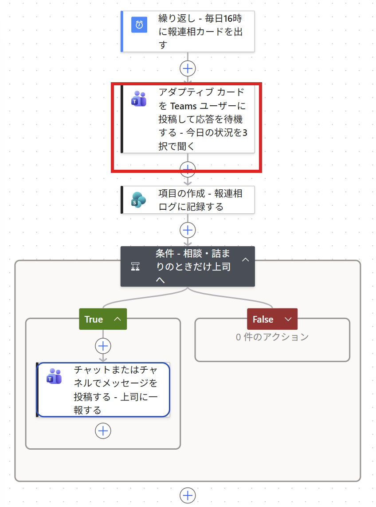
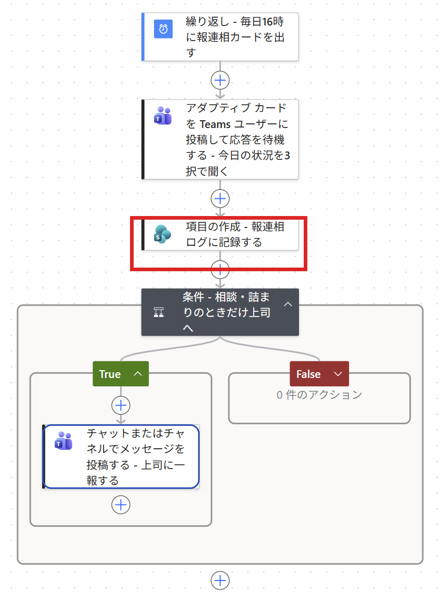
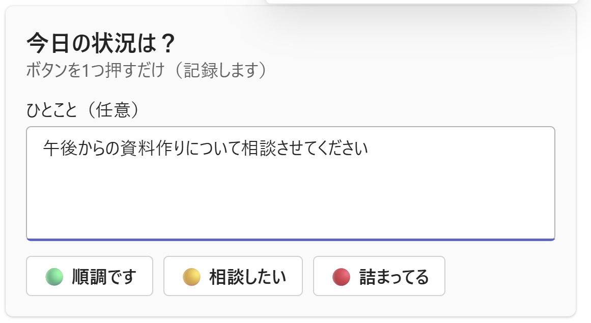

Haru
💻 Power Platform / DX 推進
- 🏢 社内で PA／Copilot ハンズオン講座を開催し、DXを推進
- 🎤 広島コミュニティ「PLUG」運営・外部コミュニティ登壇
- 📱 X で初心者向け Power Automate チップスを継続発信
- 🕐 PA45（45分の "1粒ハンズオン"）を毎週開催・運営
今日も一緒に「できた！」を作っていきましょう 😊


報連相が抜けるのは、やる気の問題ではありません。「思い出す手間」と「言い出しにくさ」のせいです。
フロー ボット
本人（自分）を選ぶ
 実画面：投稿者＝フローボット／メッセージ＝カードJSON／Recipient＝本人（Haru）
実画面：投稿者＝フローボット／メッセージ＝カードJSON／Recipient＝本人（Haru）
 実画面：リスト名＝報連相ログ／タイトル＝body/data/status｜coalesce(...)｜convertTimeZone(...)
実画面：リスト名＝報連相ログ／タイトル＝body/data/status｜coalesce(...)｜convertTimeZone(...)

ひとことを書いて 🟡相談したい を押す 状態｜ひとこと｜日時 が1行で記録
状態｜ひとこと｜日時 が1行で記録
 「本人が『相談』を選びました」＋ひとこと＋時刻
実画面：相談・詰まりのときだけ届く一報
「本人が『相談』を選びました」＋ひとこと＋時刻
実画面：相談・詰まりのときだけ届く一報